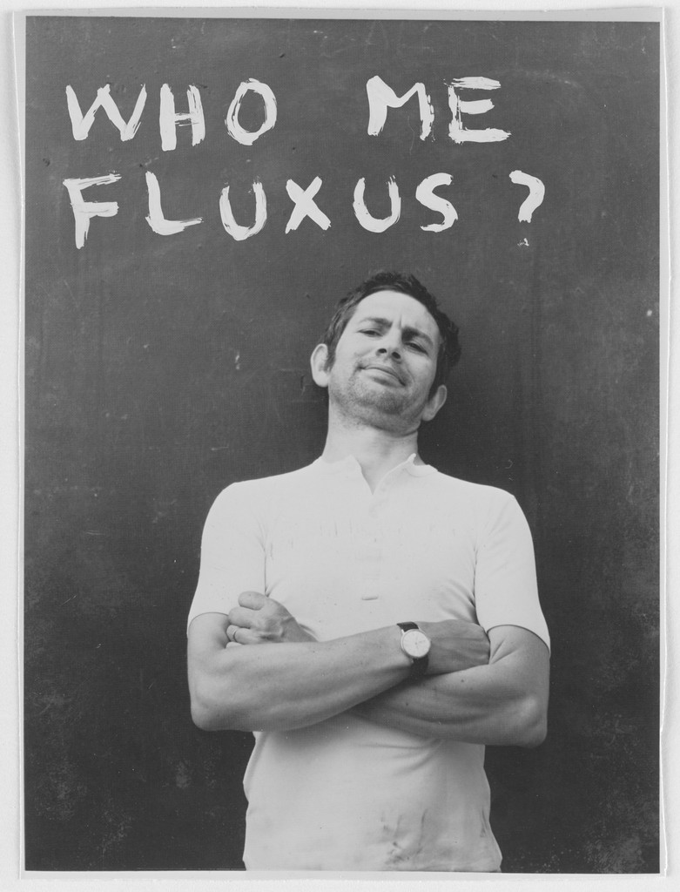

About the Fluxus Collective
Fluxus was an international, interdisciplinary community of artists, composers, designers and poets that took shape in the 1960s and 1970s. The word "fluxus" (derived from "to flow") was first used as the title of a publication featuring the work of this community, and was later adopted to identify their collective activities.
"Fluxus is not: a moment in history, or an art movement. Fluxus is: a way of doing things, a tradition, and a way of life and death."
— Dick Higgins, Fluxus artist
Taking inspiration from the concepts of composer John Cage, Fluxus challenged the conventional definitions of art by embracing an anti-art sensibility and blurring the boundaries between different artistic disciplines. The movement aimed to bring art closer to everyday life and to democratize artistic expression by creating works that were often ephemeral, participatory, and deliberately unpretentious.

Ben Vautier, 1980. Fluxus Manifesto, 1963. © The Gilbert and Lila Silverman Fluxus Collection Gift
Key Characteristics of Fluxus
Fluxus works are characterized by several distinctive traits:
- Intermedia approach that crosses boundaries between art forms
- Emphasis on simplicity and minimalism
- Use of humor, playfulness, and chance operations
- Creation of "events" and performances rather than traditional art objects
- Publication of scores, instructions, and multiples
- Rejection of commercial art markets and institutions
- Global, democratic, and collective orientation
Fluxus artists created "event scores"—short textual instructions for actions that could be performed by anyone—as well as objects, publications, and concerts. Their work often incorporated everyday materials and actions, challenging the notion that art required specialized skills or expensive materials.
Historical Context and Timeline
Fluxus emerged during a period of significant social and cultural change, influenced by earlier avant-garde movements such as Dada and Futurism. Though it lacks precise start and end dates, several key moments define its development:
1959-1960
John Cage teaches composition classes at the New School for Social Research in New York, influencing many future Fluxus artists.
1961
George Maciunas first uses the word "Fluxus" as the title for a planned publication to feature works by the new experimental artists.
1962
First Fluxus festival, "Fluxus Internationale Festspiele Neuester Musik," takes place in Wiesbaden, Germany, marking the public debut of Fluxus as a collective.
1963
Maciunas publishes his "Fluxus Manifesto," calling for a "revolution" against traditional art forms and for art that could be understood by "all peoples."
1964-1970
Core period of Fluxus activity with festivals, concerts, and publications throughout Europe, the United States, and Japan.
1970s
Fluxus activities continue but become more dispersed; many artists continue working in the Fluxus spirit while pursuing individual careers.
1978
Death of George Maciunas, often considered the end of Fluxus as an organized movement, though many artists continued creating Fluxus-inspired work.
Key Fluxus Artists
Fluxus brought together artists from diverse backgrounds and nationalities. Some of the most notable participants include:
George Maciunas
Nam June Paik
Yoko Ono
Dick Higgins
Alison Knowles
George Brecht
Ben Vautier
Robert Filliou
Takako Saito
Shigeko Kubota
Mieko Shiomi
La Monte Young
Ken Friedman
Benjamin Patterson
Wolf Vostell
Joseph Beuys
Emmett Williams
Fluxus at MoMA
The Museum of Modern Art (MoMA) holds one of the most significant collections of Fluxus works in the world. The Gilbert and Lila Silverman Fluxus Collection, donated to MoMA in 2008, includes approximately 4,000 works and significantly expanded the museum's holdings of this important movement.
The collection encompasses a wide range of Fluxus materials, including:
- Fluxkits and Fluxboxes (collections of objects and instructional materials)
- Event scores and performance documentation
- Mail art and correspondence
- Artist books and publications
- Multiples and editions
- Films and videos
- Posters and ephemera from Fluxus events
MoMA has exhibited Fluxus works in various exhibitions, both dedicated to the movement and integrated into broader surveys of experimental art from the period. Through its collection, research, and exhibitions, MoMA plays a vital role in preserving the legacy of Fluxus and introducing new generations to this influential movement.
About This Visualization
The Fluxus Mosaic Explorer presents a chronological visualization of works from the Fluxus movement, drawn from MoMA's collection. This interactive tool allows viewers to explore the development and diversity of Fluxus across its roughly three-decade span (1953-1984).
How the Visualization Works:
- Chronological Organization: Works are arranged from bottom to top, with earlier works at the bottom and later works toward the top, creating a visual timeline of Fluxus history.
- Color Coding: The visualization uses different color treatments to distinguish between three key periods of Fluxus:
- Early Fluxus (1953-1963): Grayscale tones
- Core Fluxus (1964-1973): Sepia tones
- Late Fluxus (1974-1984): Color with red enhancement
- Navigation: Users can pan, zoom, and click on individual works to view detailed information about each piece, including the artist, date, medium, and other contextual details.
- Filtering: The era filters at the bottom allow users to highlight specific periods within the Fluxus movement.
This visualization aims to provide both an aesthetic experience and an educational tool, offering insights into the patterns, transitions, and diverse expressions that characterized the Fluxus movement throughout its evolution.
Sources and Further Reading